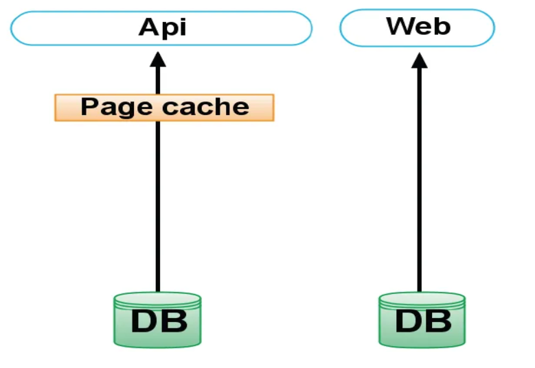
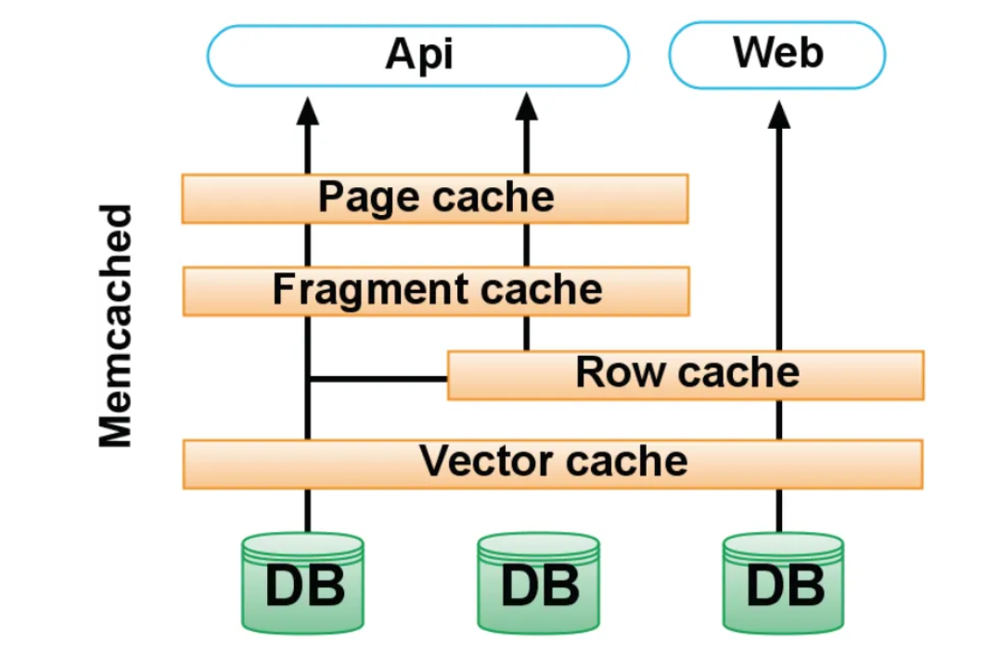
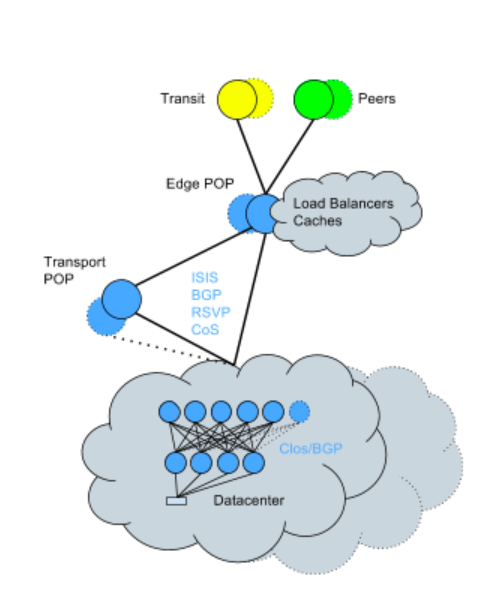
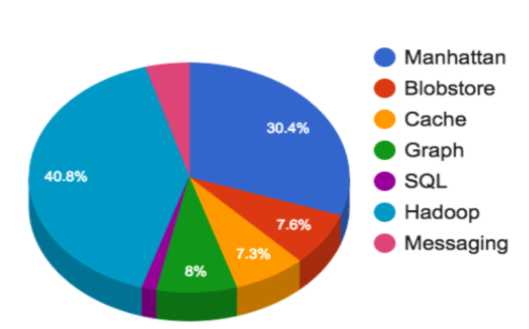
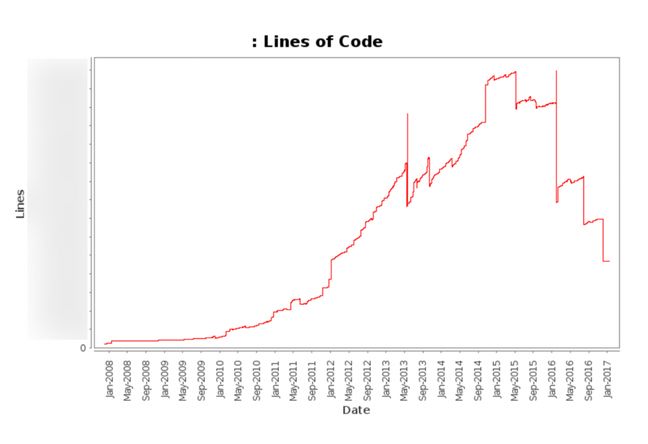
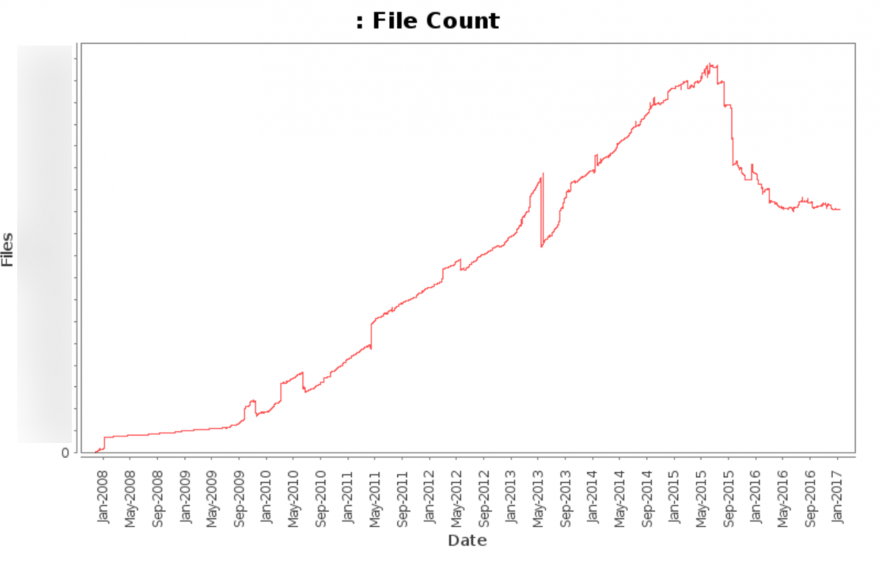
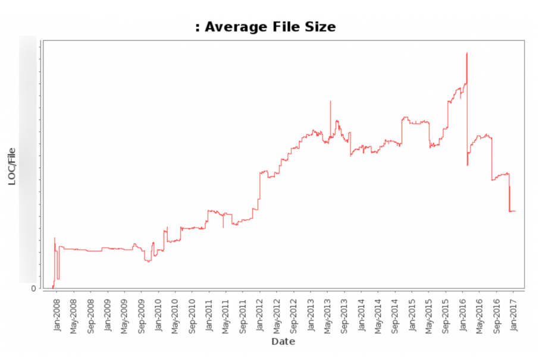

Arquitetura do twitter
Estudo sobre a a arquitetura do twitter
Índices
Introdução
Estágios iniciais
Twitter foi fundado em em Março de 2006.
Temos informações sobre a arquitetura do Twitter em 2009, onde o Engenheiro Líder do Time de Serviços da época falou sobre as ferramentas, arquitetura e outros detalhes do funcionamento do Twitter. São citadas ferramentas (muitas sendo Open Source) como Rails no front-end, C, Scala e Java na camada de negócio e MySQL para persistência de dados. É dito que boa parte é mantida em RAM, e o banco é usado apenas como um backup. Para isso é usado serviços de cache.
Requisitos e mudanças
Problemas e mudanças necessárias
O twitter fez mudanças em três áreas: Cache, MQ (Message Queue) e Memcached. A mudança no cache foi muito necessária, já que só a API tinha cache de página que era invalidado a cada hora quando um tweet chegava de um usuário, e o restante da aplicação não tinha cache. Um exemplo de mudança no cache foi a criação de um Vector Cache contendo um array de IDs de tweet, esse cache teve uma taxa de acerto de 99%.
E uma outra mudança foi a criação de pool de cache que usa esquema de chave geracional ao invés de Invalidação direta, e essa mudança fez o cache cair perto de 50%.
Em relação ao MQ (Fila de Mensagem), devido ao fato dos usuários terem em média 126 seguidores, isso significa que existem 126 mensagens colocadas na fila para cada tweet. Para resolver esse problema foi feita a primeira implementação de MQ usando o Starling (escrito em Ruby), mas não escalou bem, então em certos momentos o MQ falhava e parava a fila inteira. Então outra decisão foi tomada, que foi migrar o MQ para Scala que além de ser simples em código (1200 linhas) e roda em 3 servidores.
Na configuração inicial, só a API tinha cache como já falado acima e é mostrado com a imagem abaixo:

Passando para a atual estrutura ilustrado abaixo:

É abordado a mudança da hospedagem do twitter do modelo de hospedagem de terceiros para um data center, ainda em 2010, com o intuito de suportar a forma e velocidade que o twitter estava escalando. Em 2015 foi necessária algumas mudanças no datacenter devido ao fato de não estar aguentando o crescimento de acordo com as necessidades, para isso foi feita conversão para Topologia Clos + BGP.
A topologia Clos é usado para obter altos níveis de banda passante para vários dispositivos propriamente interconectados com switchs menores[3], já BGP é um protocolo de roteamento que toma decisões de roteamento a partir de regras ou políticas de rede definidas por administradores de rede, e assim, conseguirá auxiliar os roteadores a se adaptarem aos erros ou falhas de uma determinada rota[4], com isso a rede do datacenter fica como está ilustrado na imagem abaixo:

Alguns destaques dessa nova abordagem foram: -Menor sobrecarga de CPU do mecanismo de roteamento. -Processamento mais eficiente de atualizações de rota. -Maior capacidade de rota devido à menor sobrecarga da CPU.
Milhões de tweets são enviados todos os dias, e eles têm que ser processados, armazenados em banco, armazenados em cache e também analisados. Essa quantidade de conteúdo representa 45% de toda infraestrutura do Twitter. Os serviços usados pelas equipes do Twitter são: Os clusters Hadoop, Manhattan, Blobstore, clusters de cachem clusters de mensagens, e bancos relacionais (MySQL, PostgreSQL, Vertica).
O Twitter passou por vários bancos de dados, começando pelo MySQL que está presente desde o começo do Twitter, mas em 2010 o Twitter começou a utilizar e até mesmo criar outras estruturas/bancos para armazenar os dados. O primeiro foi o Gizzard que foi lançado em 2010, e após o seu lançamento foi apresentado também o FlockDB que é uma solução de armazenamento de gráficos sobre o Gizzard e o MySQL. Em junho de 2010, o Snowflake também foi anunciado, sendo um serviço usado como identificador exclusivo. Ainda em 2010 veio o Hadoop já citado acima, que originalmente foi destinado a armazenar backups do MySQL, e até o momento da publicação desse artigo no blog (2017) ele foi usado para análises.
Um dos últimos acréscimos a estrutura do Twitter em 2010, foi o Cassandra como uma solução de armazenamento, mas que não substituiu totalmente o MySQL (MySQL continua sendo usado até então). Mesmo com essas ferramentas e recursos, foi visto a necessidade de aumentar o cluster e, em abril de 2014, foi lançado pelo Twitter o Manhattan, que é o banco de dados distribuído em tempo real. Desde então o Manhattan se tornou a opção mais comum e viável e o Cassandra foi sendo cada vez menos usado. Abaixo uma imagem ilustrando o uso de cada ferramenta na arquitetura do Twitter:

Na imagem tem a ferramenta Blobstore que é usado para permitir uploads de fotos nativas e que foi lançado em 2012 pelo Twitter.
O Cache no momento da publicação deste artigo representa cerca de 3% da infraestrutura do Twitter, mas mesmo assim é uma parte fundamental. Ele é usado para tráfegos de leitura pesada, e permite armazenar objetos que têm custos altos. Algumas tecnologias de cache usadas são Redis e Twemcache.
No artigo é mostrado a quantidade de linhas de código, onde é dito que ultrapassa 1 milhão de linhas de códigos, e que foi feito uma limpa nos códigos com intuito de reduzir código morto e duplicado, na imagem abaixo é mostrado o gráfico da quantidade de linhas do período de 2008 até 2017:

A quantidade de arquivos também reduziu, juntamente com o tamanho médio dos arquivos, abaixo as imagens representando as duas afirmações:

